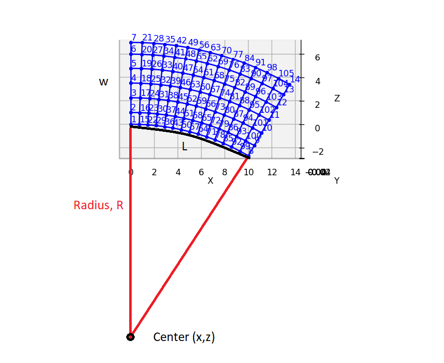
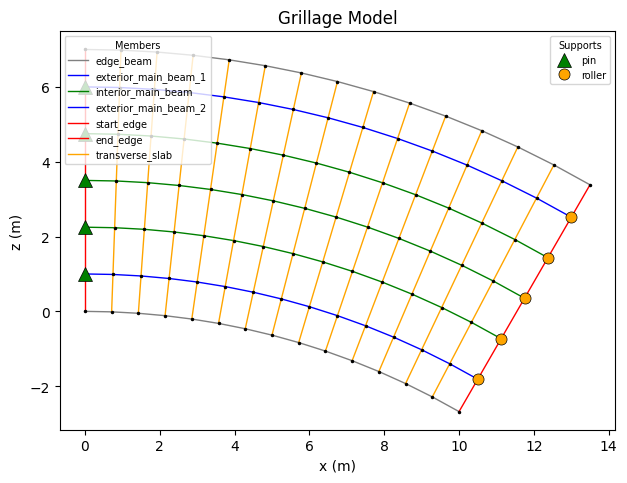

Curve Mesh#
ospgrillage allows curve mesh to be implemented. In this example we will explore the steps to define a curve mesh. In short, curve mesh are defined by setting defining a radius, R parameter. ospgrillage uses the radius along with the fundamental inputs (span, L and width ,w etc) to determine the curvature of the mesh (Figure 1).
[1]:
from IPython import display # to display images in this notebook
display.Image("../images/curve_mesh_preview.png",width=800)
[1]:

In this example, we create a single span bridge grillage model with span and width of 10 m and 7 m respectively. For demonstration purposes, the curve radius shall be 20 m. First, we begin with the necessary imports.
[2]:
import numpy as np
import ospgrillage as og
%matplotlib inline
Then, we define the parameters of the grillage.
[3]:
# Adopted units: N and m
kilo = 1e3
milli = 1e-3
N = 1
m = 1
mm = milli * m
m2 = m ** 2
m3 = m ** 3
m4 = m ** 4
kN = kilo * N
MPa = N / ((mm) ** 2)
GPa = kilo * MPa
# parameters of bridge grillage
L = 10 * m # span
w = 7 * m # width
n_l = 7 # number of longitudinal members
n_t = 15 # number of transverse members
angle = 0 # degree
mesh_type = "Ortho"
Curve mesh requires the definition of radius.
[4]:
mesh_radius = 20 * m
Define the materials and sections of the grillage similar to the standard workflow.
[5]:
concrete = og.create_material(material="concrete", code="AS5100-2017", grade="65MPa")
# define sections (parameters from LUSAS model)
edge_longitudinal_section = og.create_section(
A=0.934 * m2,
J=0.1857 * m3,
Iz=0.3478 * m4,
Iy=0.213602 * m4,
Az=0.444795 * m2,
Ay=0.258704 * m2,
)
longitudinal_section = og.create_section(
A=1.025 * m2,
J=0.1878 * m3,
Iz=0.3694 * m4,
Iy=0.113887e-3 * m4,
Az=0.0371929 * m2,
Ay=0.0371902 * m2,
)
transverse_section = og.create_section(
A=0.504 * m2,
J=5.22303e-3 * m3,
Iy=0.32928 * m4,
Iz=1.3608e-3 * m4,
Ay=0.42 * m2,
Az=0.42 * m2,
)
end_transverse_section = og.create_section(
A=0.504 / 2 * m2,
J=2.5012e-3 * m3,
Iy=0.04116 * m4,
Iz=0.6804e-3 * m4,
Ay=0.21 * m2,
Az=0.21 * m2,
)
# define grillage members
longitudinal_beam = og.create_member(section=longitudinal_section, material=concrete)
edge_longitudinal_beam = og.create_member(
section=edge_longitudinal_section, material=concrete
)
transverse_slab = og.create_member(section=transverse_section, material=concrete)
end_transverse_slab = og.create_member(
section=end_transverse_section, material=concrete
)
At the create_grillage step, pass in the mesh radius to mesh_radius= keyword argument.
[6]:
example_bridge = og.create_grillage(
bridge_name="SuperT_10m",
long_dim=L,
width=w,
skew=0,
num_long_grid=n_l,
num_trans_grid=n_t,
mesh_type="Ortho",
mesh_radius=mesh_radius,
)
Finally, we set the members accordingly, create the model and plot.
[7]:
example_bridge.set_member(longitudinal_beam, member="interior_main_beam")
example_bridge.set_member(longitudinal_beam, member="exterior_main_beam_1")
example_bridge.set_member(longitudinal_beam, member="exterior_main_beam_2")
example_bridge.set_member(edge_longitudinal_beam, member="edge_beam")
example_bridge.set_member(transverse_slab, member="transverse_slab")
example_bridge.set_member(end_transverse_slab, member="start_edge")
example_bridge.set_member(end_transverse_slab, member="end_edge")
example_bridge.create_osp_model(
pyfile=False
)
og.plot_model(example_bridge, show_nodes=True);
